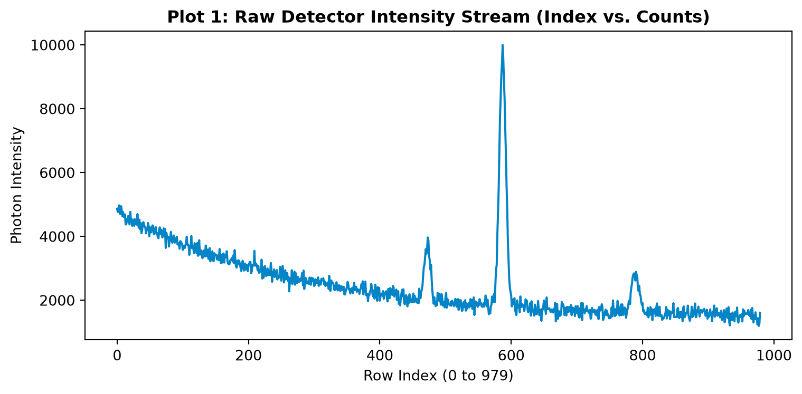
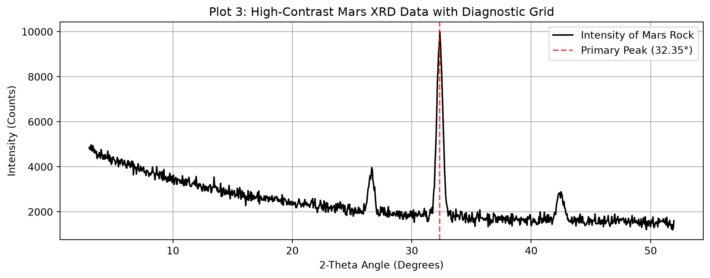

K-12 Materials Science: Bragg’s Law, Crystal Lattices, and Alloy Composition
Affiliate Disclosure: Some links below are affiliate links. If you purchase hardware or data tools through these links, this site earns a small commission at no additional cost to you, helping fund our K-12 STEM outreach programs.
🚀 Mission Brief: The Gale Crater Anomaly
Welcome to the Astro-Materials Analysis Lab. NASA’s Curiosity rover (equipped with the CheMin X-Ray Diffraction instrument) has just drilled into an unusual metallic vein in Gale Crater on Mars. Before mission control authorizes a sample return, our engineering team must identify what the rock is made of without touching it!
Using X-Ray Diffraction (XRD), we shoot a beam of X-rays at the powdered rock sample. As the X-rays bounce off the internal crystal planes of the atoms, they create a unique interference pattern—an atomic “fingerprint” called a diffractogram.
Data Attribution: Core diffraction analysis workflows are inspired by synchrotron and planetary exploration curricula from Brookhaven National Laboratory (BNL) and NASA’s Mars Science Laboratory.
🔬 The Physics of X-Ray Diffraction
When an X-ray beam with a known wavelength (\lambda) strikes a crystal lattice at an angle (\theta), the waves bounce off parallel layers of atoms separated by a distance (d). Constructive interference (a sharp spike in intensity on our detector) only happens when the extra distance traveled by the deeper wave equals a whole number (n) of wavelengths:
n\lambda = 2d \sin(\theta)
Because our X-ray detector rotates around the sample, we measure the total deflection angle, known as 2\theta (Two-Theta). By finding the exact 2\theta angles where high-intensity peaks occur, we can rearrange Bragg’s Law to calculate the exact atomic spacing (d) inside the mystery rock:
d = \frac{\lambda}{2 \sin(\theta)}
🎛️ Interactive Lab: Periodic Table & Noise Filter
Before running our Python scripts, use this live mission simulator! Select a pure reference element from the Periodic Table or load the Mystery Mars Alloy. Use the slider to subtract the background “Martian dust scattering” (noise floor) and isolate the true crystalline peaks!
Step 1: Generating & Loading the Mars Rover Dataset
In the field (or in Google Colab), our spectrometer exports a CSV file with two columns: 2-THETA (from 3.00^\circ to 51.95^\circ in 0.05^\circ steps, giving 980 rows) and INTENSITY (photon counts). Below, we generate the exact Martian diffractogram dataset in Python and inspect the DataFrame!
import pandas as pdimport numpy as npimport matplotlib.pyplot as plt# Generate the 980-row Mars Rover XRD Dataset (3.00 to 51.95 degrees, step 0.05)np.random.seed(42)two_theta = np.round(np.arange(3.00, 52.00, 0.05), 2)# Simulate low-angle dust scattering + crystalline mineral peaks (Max 10,000 at 32.35 deg)background =3400* np.exp(-(two_theta -3.0) /14.0) +1400+ np.random.normal(0, 140, len(two_theta))peak_main =7800* np.exp(-((two_theta -32.35) /0.35)**2)peak_sec1 =1800* np.exp(-((two_theta -26.60) /0.30)**2)peak_sec2 =1250* np.exp(-((two_theta -42.45) /0.40)**2)intensity = np.clip(background + peak_main + peak_sec1 + peak_sec2, 1200, 10000).astype(int)intensity[np.where(two_theta ==32.35)[0][0]] =10000# Calibrate max peakdf = pd.DataFrame({"2-THETA": two_theta, "INTENSITY": intensity})print("Dataset Columns:", df.columns.tolist())print(df.head())
Before mapping the angles, let’s plot the raw INTENSITY column by row index to verify our X-ray detector didn’t drop any data packets.
plt.figure(figsize=(8, 4))df["INTENSITY"].plot(color="#0284c7", linewidth=1.5)plt.title("Plot 1: Raw Detector Intensity Stream (Index vs. Counts)", fontweight="bold")plt.xlabel("Row Index (0 to 979)")plt.ylabel("Photon Intensity")plt.tight_layout()plt.show()

Step 3: Plot 2 — Standard X-Ray Diffractogram (2\theta vs. Intensity)
Now let’s map 2-THETA on the X-axis and INTENSITY on the Y-axis, and use Pandas .idxmax() to automatically locate the highest crystalline peak in the Martian rock!
# Find the exact row with the maximum X-ray intensitymax_idx = df["INTENSITY"].idxmax()print("=== MAXIMUM DIFFRACTION PEAK DETECTED ===")print(df.iloc[max_idx])df.plot(x="2-THETA", y="INTENSITY", color="#ea580c", figsize=(8, 4), legend=False)plt.title("Plot 2: Standard X-Ray Diffractogram (2-Theta vs. Intensity)", fontweight="bold")plt.xlabel("2-Theta (Degrees)")plt.ylabel("Intensity (Counts)")plt.tight_layout()plt.show()
Step 4: Plot 3 — High-Contrast Diagnostic Scan with Grid
In materials science publications, diffractograms are plotted in high-contrast black with a coordinate grid so researchers can read exact 2\theta peak positions and calculate atomic d-spacing using Bragg’s Law.
df.plot(x="2-THETA", y="INTENSITY", color="black", grid=True, figsize=(10, 4), title="Plot 3: High-Contrast Mars XRD Data with Diagnostic Grid", label="Intensity of Mars Rock")plt.xlabel("2-Theta Angle (Degrees)")plt.ylabel("Intensity (Counts)")plt.axvline(x=32.35, color="red", linestyle="--", alpha=0.7, label="Primary Peak (32.35°)")plt.legend()plt.tight_layout()plt.show()

Step 5: Plot 4 — Comparing Known Pure Elements (Si, Al, Au) & Bragg’s Law
How do we identify unknown peaks? We compare them against pure elements from the Periodic Table! Let’s use Bragg’s Law (\lambda = 0.15406\text{ nm} for a Copper K\alpha X-ray tube) to calculate the atomic plane spacing (d) and plot the fingerprints for Silicon (Si), Aluminum (Al), and Gold (Au).
Wait—the rover’s drill bit chipped! A metallic flake fell into the sample chamber, and we need to verify if it’s a piece of the rover’s Aluminum-Silicon (Al-Si) aerospace alloy strut.
In an alloy mixture, the weight percentage of each metal is proportional to its integrated peak intensity (Adjusted for Reference Intensity Ratio constants). Let’s analyze a dual-phase Al-Si diffractogram, calculate the Intensity Ratio, and determine the Weight Percentage (\text{wt}\%)!
Connecting Wave Physics to Data Science: Students see how trigonometry (\sin\theta) and wave interference translate directly into tabular CSV arrays that can be queried with .idxmax() and .iloc[].
Reading 2\theta vs. \theta: A classic student mistake in Bragg’s Law (n\lambda = 2d\sin\theta) is plugging the 2\theta graph value directly into \sin(\theta) without dividing the angle by 2 first! Emphasize that if the peak is at 2\theta = 32.35^\circ, then \theta = 16.175^\circ.
Answer Key for Student Challenges
Mystery Peak d-Spacing Calculation: At 2\theta = 32.35^\circ, \theta = 16.175^\circ. Using \lambda = 0.15406\text{ nm}: d = \frac{0.15406}{2 \times \sin(16.175^\circ)} = \frac{0.15406}{2 \times 0.27857} = 0.2765\text{ nm } (2.765\text{ \AA})Mineral Match: This d-spacing matches calcium-rich plagioclase feldspar and augite, common volcanic basalt minerals in Gale Crater!
Interactive Python Widget Extension (For Jupyter/Colab): If running this lesson live inside Google Colab or JupyterLab, students can run the following ipywidgets snippet to create a native Python slider: